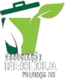
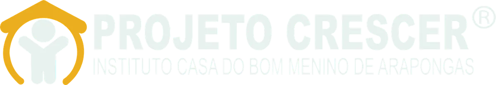
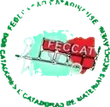
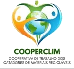
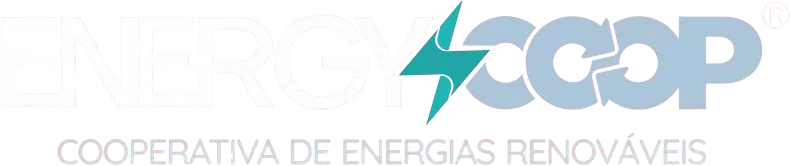
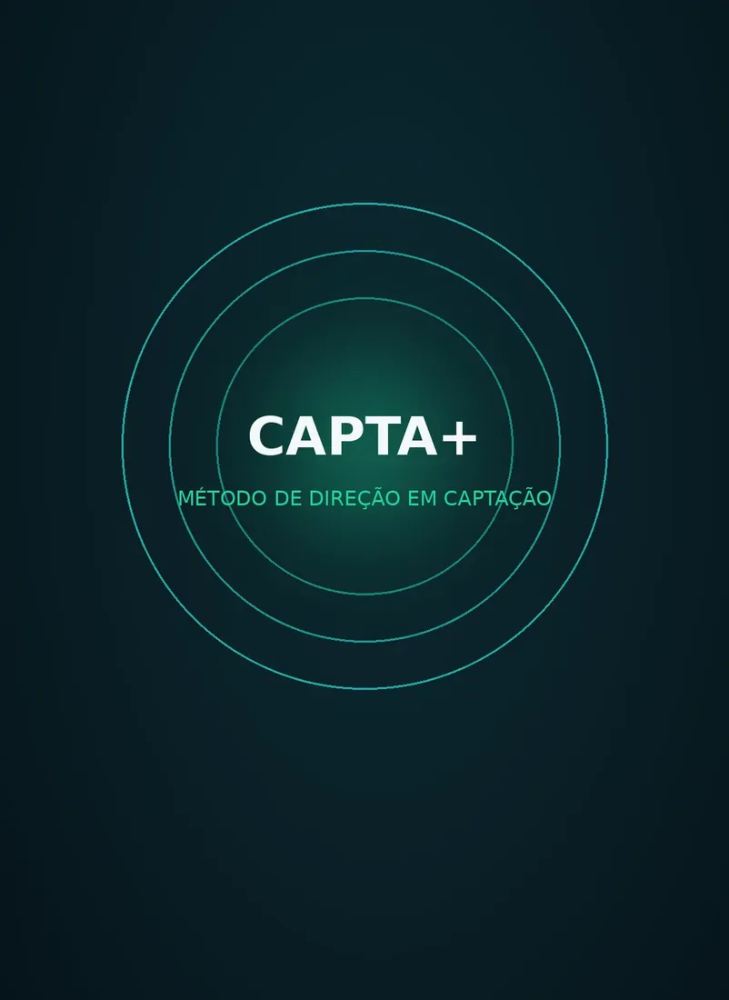

Método Capta+
Captação pública
Captação pública
com direção.
Editais não faltam — falta o projeto no formato certo e a entidade pronta para responder. O Método Capta+ é o guia da sua organização, em 6 etapas, da oportunidade à prestação de contas.
Agendar diagnóstico de prontidão — 72h
Como funciona
Ainda não é hora do diagnóstico? Veja quantas empresas do Lucro Real cabem na sua meta ou leve o resumo de 1 página para o conselho.
Sem compromisso. Em 72 horas você recebe o diagnóstico com o que a sua organização já pode captar.
Direção
Estrutura
Continuidade

VISÃOOportunidades com direção
Monitoramento contínuo
Diagnóstico 72hReforma estatutáriaPlano de trabalhoRadarConformidadePrestaçãoExecução
Credibilidade em rede
Entidades parceiras
Organizações do Terceiro Setor com as quais o Método Capta+ atua na captação e na estruturação de projetos.




Inteligência de oportunidades
O que o nosso Radar encontrou.
Acompanhamos continuamente editais, chamamentos, leis de incentivo e fundos de captação — e medimos a aderência de cada um ao perfil das organizações que atendemos.
1612oportunidades acompanhadas
8com aderência ao perfil
1projetos em estruturação
458oportunidades priorizadas
Áreas de captação · 1612 oportunidades
- 482EDITAIS
- 44CHAMAMENTOS PÚBLICOS
- 787PRONAC ROUANET
- 248LIR RECICLAGEM
- 1EMENDAS
- 18FIA
- 12FUNDO DO IDOSO
- 14LIE
- 6PNAB
Atualizado em 08/10/2026.
Destaques
Últimos estudos
Últimos estudos
e newsletters.
Conheça nossas Estratégias de Captação Atualizadas Abaixo - SÓ CLICAR PARA CAPTAR!!!
Veja os destaques no Substack do Método Capta+.
Para decidir com segurança
Cinco perguntas que destravam a captação.
Problema
O que estamos resolvendo?
Não falta edital — falta direção e prontidão.
ver o problemaImpacto
Qual resultado espero?
Menos oportunidade perdida, projeto no formato do edital e contas sem glosa.
ver o impactoRecomendação
Por que este caminho?
Método em 6 etapas — improvisar custa mais caro que estruturar.
ver o métodoRisco
O que eu assumo?
Atuação de meio: o recurso é da sua organização.
ver os riscosDecisão
Como avanço?
Diagnóstico (72h) → proposta por escopo → execução.
ver o próximo passo
O problema real
Não falta oportunidade. Falta direção.
Editais, fundos e incentivos existem o ano inteiro. O que trava a captação não é a falta de aviso — é a oportunidade que chega quando a entidade ainda não está pronta para responder.
Oportunidade dispersa → expira
Editais, fundos e chamadas espalhados em dezenas de portais. Quem não tem radar descobre tarde — e o prazo se perde.
Documento fora de ordem → a verba volta
Estatuto desatualizado, certidão vencida, ata faltando. A porta fecha antes do pedido — e a verba volta por falta de lastro.
Projeto que não fala a língua → não pontua
Trabalho sério descrito de um jeito que o edital não reconhece. O impacto existe; a pontuação, não.
O custo de não ter direção é recurso que não chega. O Método Capta+ existe para reduzir esse custo — com direção, evidência e continuidade.
Por que este caminho
Captar sozinho, contratar no improviso ou estruturar.
As três formas resolvem — mas com riscos, prazos e resultados muito diferentes.
| Fazer internamente | Freelancer / consultoria comum | Método Capta+ | |
|---|---|---|---|
| Risco | Edital perdido por desorganização; retrabalho | Depende de uma pessoa; sem continuidade | Processo com conformidade e rastreabilidade |
| Prazo | Aprende no meio do caminho | Varia com a agenda do profissional | 72h diagnóstico · 30 dias estruturação |
| Conformidade | Erros que viram glosa | Sem padrão de prestação de contas | Evidência e lastro em cada etapa |
| Continuidade | Para quando a equipe muda | Termina na entrega do documento | Do diagnóstico à prestação de contas |
| Resultado | Imprevisível | Bom documento, sem acompanhamento | Projeto no formato do edital + acompanhamento |
O Método Capta+ custa mais que “fazer sozinho” — e muito menos que perder a oportunidade.
O mecanismo
Informação não é
Informação não é
direção.
Entre o edital que aparece e o recurso que entra existe uma sequência. Pular etapa é o que faz a oportunidade virar intenção.
As seis etapas — clique em cada uma para ver o que ela entrega:

01 · Encontrar
Inteligência em captação
Leitura estratégica, foco e organização para enxergar o que importa.
02 · Compreender
Oportunidades com direção
Menos dispersão e mais critério para transformar possibilidades em escolhas.
03 · Compatibilizar
Compatibilidade e estratégia
Aderência, coerência e priorização antes de seguir para a execução.
04 · Estruturar
Estruturação de projetos
Organização de objetivos, etapas e entregas em uma construção consistente.
05 · Preparar
Prontidão documental
Preparação, rastreabilidade e continuidade para reduzir perda de contexto.
06 · Acompanhar
Monitoramento contínuo
Prazos, marcos e acompanhamento para manter a jornada em movimento.
Fluxo gerado:
OportunidadeTriagemCompatibilidadeEstratégiaProjetoCaptaçãoImpacto
Mapeamos editais, emendas, leis de incentivo e fundos com a janela aberta para o seu setor e o seu território.
Lemos o edital e o seu estatuto antes de escrever qualquer linha do projeto.
Cruzamos o que o edital exige com o que a sua organização já é e já tem.
Construímos metas, etapas, orçamento por rubrica e nexo causal.
Blindamos a habilitação e organizamos a abordagem a quem decide.
Monitoramos prazos, execução e prestação de contas — com dado conciliado.
Evidências
Por que confiar
Por que confiar
no método.
Não pedimos confiança por adjetivo. Mostramos de onde ela vem.
Método com entregas verificáveis
A jornada em seis etapas produz artefatos concretos: radar de oportunidades, leitura de compatibilidade, estrutura do projeto, prontidão documental e monitoramento do ciclo.
- Estudos e análises — leitura de edital, matriz de elegibilidade e parâmetros legais versionados.
- Rastreabilidade — contexto e histórico preservados ao longo do trabalho.
- Transparência — riscos, pendências e prioridades tratados com clareza.
- Responsabilidade — sem promessa automática de aprovação, protocolo ou resultado.
Organizações que já percorrem a jornada
Associações, cooperativas e federações do Sul do Brasil aplicam o método na prática — do estatuto ao relatório de execução.
- Parceiros na esteira — Recicla Palhoça (SC), Projeto Crescer / Casa do Bom Menino (PR) e FECCAT (SC).
- Experiência somada — organizações com décadas de atuação no território e histórico em captação incentivada.
- Rede — do pátio da cooperativa à federação estadual, no mesmo método.
Indicadores de captação
Trajetória ampla/apresentada em captação de recursos públicos e incentivados para projetos de inclusão digital, saúde e infância.
R$ 2,5 MValor captado
25Projetos aprovados
15 anosExperiência
100%Conformidade
Trajetória ampla/apresentada: acumulado de captações e de projetos conduzidos no HUB — mais de 8 fontes de recursos. Consultoria de meio: o recurso captado pertence à organização e é comprovável em cada conta vinculada e prestação de contas.
Prova nomeada
Casos reais.
Entregas verificáveis, com números — não promessas.
COOPERCLIM · rede FECCAT/SC
Plano de trabalho da emenda nº 030939/2026 estruturado para R$ 600 mil, beneficiando 20 entidades e 434 catadores.
Conformidade no remanejamento
Remanejamento de R$ 50 mil (GND 4→3) pedido pelo gabinete, mantendo o total de R$ 600 mil — processo sem devolução.
Palhoça/SC
Plano de trabalho fiduciário de R$ 69 mil, com BDI 27,49% e SROI 3,2:1 (retorno social estimado).
Transparência
Riscos, escopo e o que você pode esperar.
O que assumimos
- Atuação de meio: o recurso é da organização.
- Conformidade e rastreabilidade em cada etapa.
- Método com entregas verificáveis.
- Acompanhamento até a prestação de contas.
O que não prometemos
- Captação garantida — a decisão do aporte é do financiador.
- Resultado sem contrapartida documental.
- Atalho fora do edital ou da lei.
O escopo é empenho técnico e estruturação: você sai com projeto, documentação e prontidão, independente do aporte.
Frentes avulsas, contratadas por escopo. Você começa pelo diagnóstico (72h) e escolhe o que contratar.
72 horas (diagnóstico) · 30 dias (estruturação) · 90 dias (captação e prestação de contas).
Não. Trabalhamos em frentes avulsas, conforme a necessidade da organização.
Para quem é
Feito para quem capta
Feito para quem capta
com responsabilidade.
O método se adapta ao tamanho da organização — do primeiro edital à gestão de um portfólio inteiro.
Organizações da sociedade civil que precisam transformar projeto em recurso.
Grupos de trabalho coletivo com CNPJ ativo e vontade de captar em nome próprio.
Entidades locais que dependem de editais, fundos e emendas para manter a atividade.
Estruturas que representam vários grupos e precisam de padrão e escala.
Organizações com portfólio que exigem governança e prestação de contas sólida.
Grupos em formalização que precisam organizar a casa antes de pedir.
Perguntas frequentes
O que costumam perguntar
O que costumam perguntar
antes de começar.
O que é o Método Capta+?
É um método de direção em captação de recursos que organiza a jornada em seis etapas — Encontrar, Compreender, Compatibilizar, Estruturar, Preparar e Acompanhar — para transformar informação dispersa em projeto preparado para captar.
Para quem é?
Para organizações da sociedade civil, cooperativas, associações, federações e redes, institutos e fundações que dependem de editais públicos, fundos, emendas parlamentares ou leis de incentivo.
Quais leis de incentivo o método cobre?
As leis federais — Rouanet (Lei nº 8.313/1991), Lei de Incentivo à Reciclagem (Lei nº 14.260/2021) e Lei de Incentivo ao Esporte — os fundos da infância e do idoso e o Marco Regulatório das OSCs (MROSC — Lei nº 13.019/2014).
Como começar
Comece pelo diagnóstico. Sem compromisso.
1
Diagnóstico de prontidão — 72h
Mapeamos estatuto, certidões, editais e elegibilidade. Você recebe o que já pode captar e o que falta.
2
Proposta por escopo
Você escolhe as frentes avulsas que fazem sentido — sem pacote fechado.
3
Execução e acompanhamento
Do plano de trabalho à prestação de contas, com evidência e rastreabilidade.
Resposta em até 1 dia útil · Sem compromisso.
Calculadora de captaçãoquantas empresas do Lucro Real cabem na sua meta →
Resumo para o conselho1 página para levar à diretoria →
Frentes avulsas
Contato
Fale com a equipe
Fale com a equipe
do Método Capta+.
Conte brevemente o que sua equipe precisa organizar. Entramos em contato para uma conversa direcionada ao seu cenário.
Método Capta+
metodocaptamais@gmail.com
Dados usados somente para retorno do contato
Solicitação registrada com referência
Gestão Inteligente para Captação Pública.
Fale com o Método Capta+
Conte brevemente o que a sua equipe precisa organizar. A conversa começa no WhatsApp — sem formulário, sem espera.
Abrir conversa no WhatsApp →Ou escreva para metodocaptamais@gmail.com.
O Método Capta+ apoia organização, análise e gestão da jornada de captação. Não substitui pareceres jurídicos, contábeis, técnicos ou documentais e não representa garantia de aprovação, assinatura, protocolo ou resultado em processos públicos.